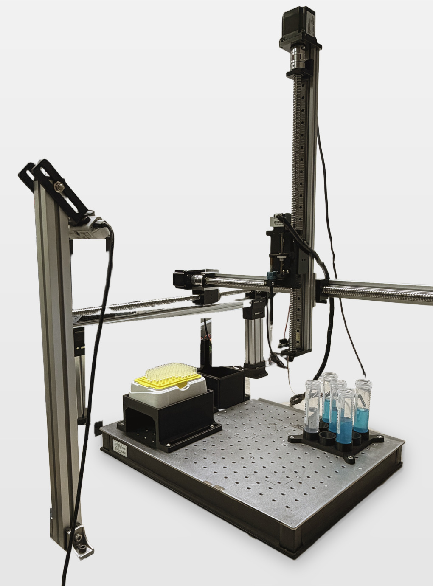
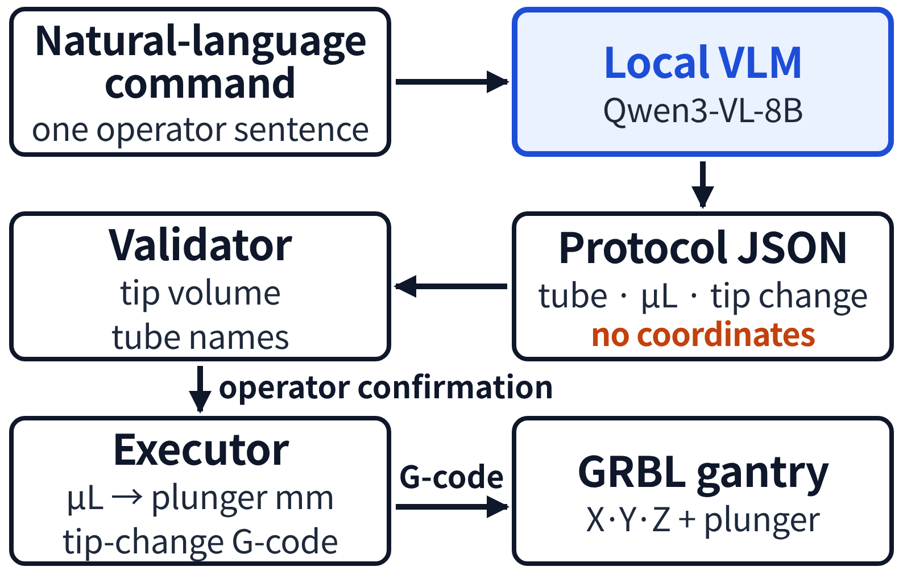

The robot


Typed request
“First move over the waste, then to the lysate, then to the buffer. Then transfer 100 µL of buffer into the sample and mix the sample with 150 µL 3 times. Then change the tip. Transfer 50 µL of the sample into the lysis tube, then transfer 80 µL from the lysis tube into the lysate. At the end, move over to the sample.”
✓ containers known, volumes in range


The operator types one plain-English sentence into the console. A local VLM (Qwen3-VL-8B) turns it into a protocol of tube names and volumes, and the robot runs the protocol only after rule-based safety checks and the operator’s approval.
Natural language to robot motion The local VLM writes a checked protocol, and the executor turns it into G-code.
- 7/8: test sentences converted into a correct protocol, in one try each and including one in Korean.
- 12 steps from one sentence ran on the robot: moves, transfers, a mix and a tip change.
- 477–589 s per run over 3 runs; the two longer runs include fitting the first tip.
Calibrated custom pipette Water weighed on a 0.001 g balance, with the pipette hand-held off the gantry.
- 13.0 µL/mm: volume moved per millimetre of plunger travel.
- 0.1–2.5%: error of the mean volume against the calibration’s prediction.
- 1.55–2.86%: shot-to-shot spread (coefficient of variation) at 96–200 µL.
Safe by design
- The executor makes the coordinates: it converts the model’s plan (tube names, volumes and order) into positions from the saved tube positions and safety rules such as a safe Z height, so the pipette avoids the parts on the deck.
- Tip-volume check: impossible protocols, such as dispensing more than the tip holds, are rejected before they run.
- Operator approval: the robot moves only after the operator approves the plan.
My part: I built the three-axis gantry and the motorized pipette, set up the grbl firmware and fixed a bug in it that silently dropped motor steps, wrote the G-code layer, the executor and the operator console, connected the local VLM and calibrated the pipette.